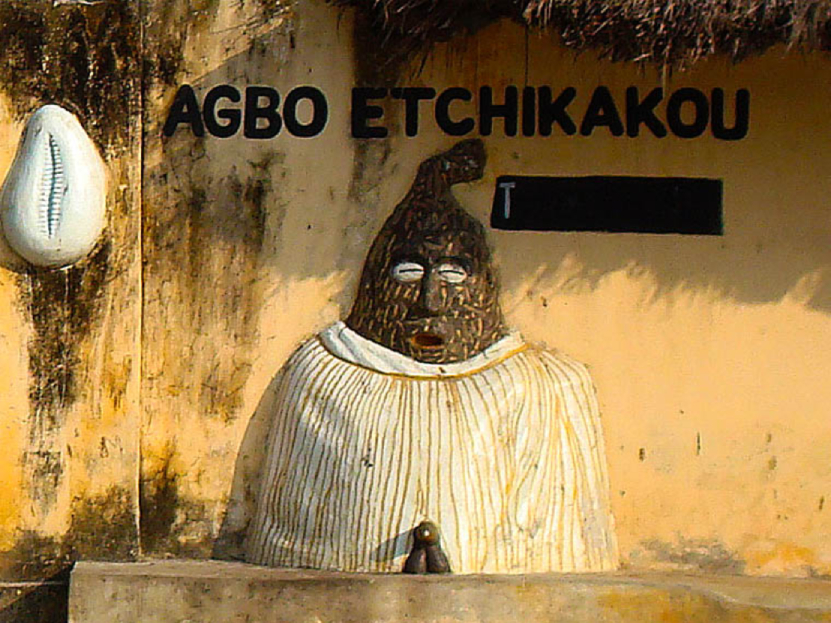

Grand-Popo, au Bénin, est une région riche en culture, notamment grace à la présence du peuple Xwla (ou Popo) et à la réligion vaudou. La région est aussi
marquée par la proximité de la frontière avec le Togo, ce qui contribue à sa diversité cuturelle.

Culture du peuple Xwla (Popo) :
Palais royal :Le Palais royal du peuple Xwla est situé à Hévé, sur la rive gauche du Mono.
Fetes vaudou : Le peuple Xwla participe activement aux fetes vaudou, notamment la date nationale du vaudou le 10 janvier.
identité culturel : La communauté Xwla célèbre la Fete identitaire de la communauté, Nonvitcha.
Art et traditions : Les arts et traditions du peuple Xwla, comme ceux de toute la région béninoise, s'inspirent des pratiques culturelles
animistes, avec des expressions en bois, cuivre, fer, bronze, poterie,vanerie et peinture.
Réligion dominante Le vaudou est la réligion dominante dans le département du Mono, dont Grand-Popo fait partie.